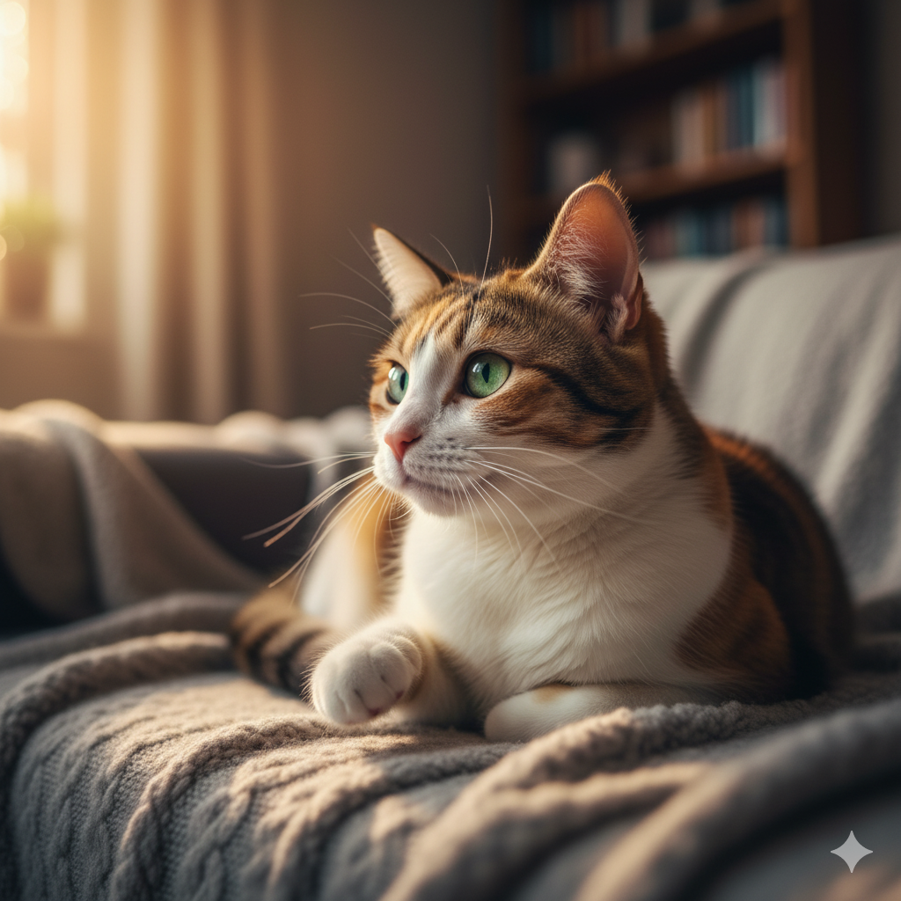
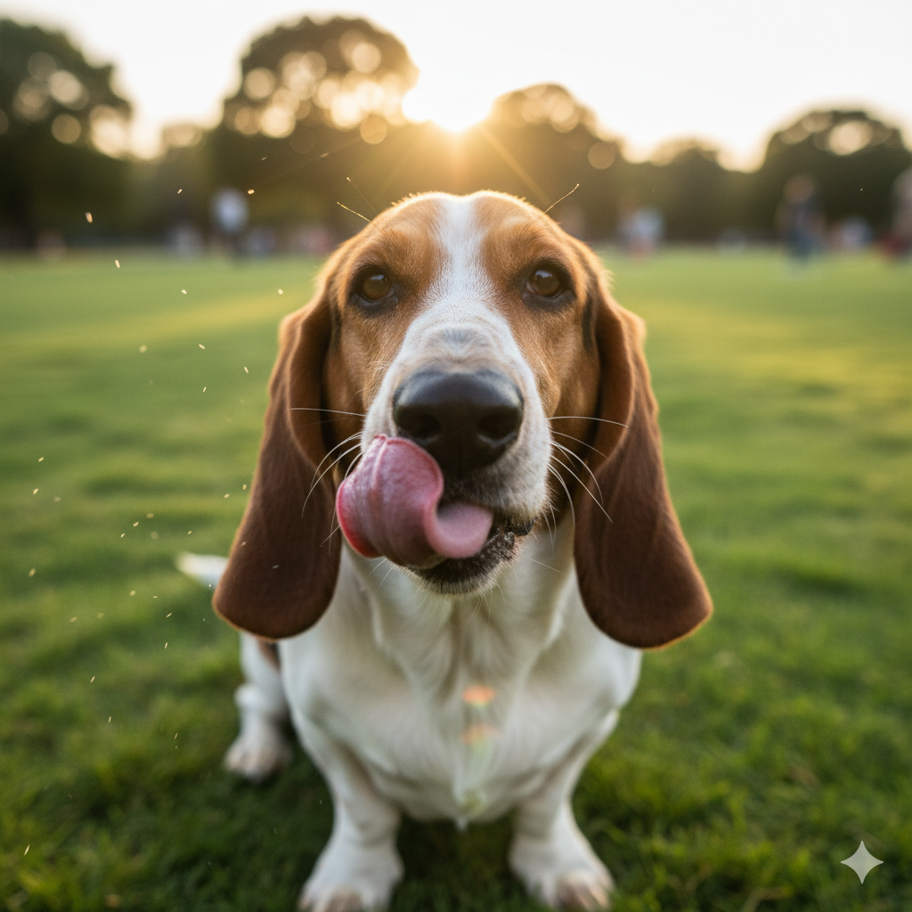

Nossos Anjinhos (Animais em Destaque para Adoção)
Esses Corações Estão Esperando por Você

Nome: Peróla
Gênero: Fêmea
Idade: 7 anos
Personalidade: Carinhosa e Brincalhona

Nome: Cristal
Gênero: Fêmea
Idade: 10 anos
Personalidade: Apegada e Agitada

Nome: Chico
Gênero: Macho
Idade: 7 anos
Personalidade: Gosta de Lamber e Agitado